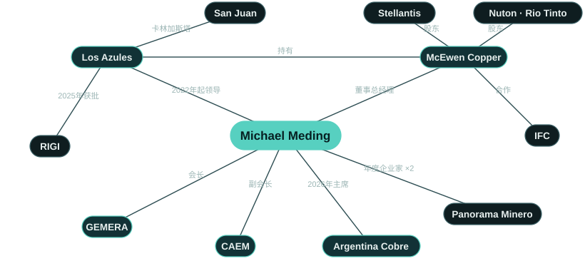

最新动态：2.4亿美元定期贷款
2026年8月27日，麦克尤恩铜业（McEwen Copper）完成2.4亿美元优先有担保定期贷款。所得资金将用于Los Azules的工程设计和早期工程，为计划于2027年年中作出的最终投资决定做准备。[7]
This financing reflects our lenders' confidence in Los Azules and in the progress Argentina has made over the past two and a half years. […] We are proud to be building Los Azules here.此次融资体现了贷款方对Los Azules的信心，也体现了他们对阿根廷过去两年半所取得进展的信心。[…]我们为在这里建设Los Azules而自豪。（英文原声明的译文）
概述
洛斯阿苏莱斯（Los Azules）地处圣胡安省卡林加斯塔（Calingasta）的安第斯高山之上，按矿产资源总量计，是全球第十大未开发斑岩型铜矿。迈克尔·梅丁于2022年2月执掌该项目，先任副总裁兼总经理，2026年起出任麦克尤恩铜业（McEwen Copper）董事总经理。他上任第一年，团队直接雇员从32人增至142人；自2022年以来，累计钻探进尺逾12万米。这几年间，他引入Stellantis和力拓（Rio Tinto）旗下的Nuton作为战略投资者，与国际金融公司（IFC）签署合作协议，并聘请法国兴业银行（Société Générale）担任项目债务融资财务顾问。项目预计于2027年年中作出最终投资决定，目标在2030年产出首批商业阴极铜。[1, 5, 7, 12–16]
他出生于杜塞尔多夫，中学毕业于鲁尔区埃森市的Alfred Krupp Schule。他的职业生涯始于普华永道（PwC），被派驻瑞士，一待就是七年，其间通过首席财务官培养计划加入诺华（Novartis）。此后他移居智利，由此开始了在拉丁美洲逾十五年的工作经历，先后在智利和阿根廷的跨国公司担任首席财务官。2010年，他进入矿业，出任巴里克黄金（Barrick Gold）阿根廷业务首席财务官，在贝拉德罗（Veladero）金矿扭转颓势、延长矿山服务年限以及与山东黄金（Shandong Gold）建立战略合作的过程中发挥了关键作用。在托克（Trafigura），他担任一座多金属矿山的首席财务与行政官（CFAO）。他曾在欧洲和美洲的八个国家工作，现往返于圣胡安和多伦多两地。[2, 3, 17, 18]
他是GEMERA首位外籍会长，同时出任阿根廷矿业企业家商会（CAEM）副会长，并担任Cámara Minera de San Juan（圣胡安矿业商会）执行委员会成员。他于2025年担任阿根廷全国铜业大会Argentina Cobre名誉主席，2026年出任大会主席。他拥有Ruhr-Universität Bochum（波鸿鲁尔大学）理学学士学位，以及HHL Leipzig（莱比锡管理研究生院）和Indiana University of Pennsylvania（宾夕法尼亚印第安纳大学）的MBA学位，目前正在Universidad Católica de Cuyo（库约天主教大学）攻读矿业管理硕士学位。2026年，他以第一作者身份在《Veredas do Direito》发表一项关于拉丁美洲矿业社会经营许可的研究。[10, 19–23]

业绩记录
他在Los Azules交出的成绩，以及他为项目带来的经验。
为绿地矿山筹集资本
他为一个绿地铜矿项目搭建起资本基础：两家战略股东、国际金融公司（IFC）、一家项目债务融资顾问，以及一笔2.4亿美元定期贷款。
许可审批与公共政策
他带领Los Azules取得环境许可，并使其成为首个获RIGI批准的铜矿项目。
从资源到可行性研究
完成更新版初步经济评估和可行性研究，并推动项目进入详细工程设计阶段。
扎根圣胡安的团队
他立足圣胡安组建项目团队，用的是圣胡安本地人才。
行业领导力
在各大矿业与投资论坛上，为阿根廷铜业和勘探业持续发声。
深谙矿业金融
加入Los Azules之前，在企业财务和矿业金融领域工作二十年。
人工智能落地业务
他将人工智能引入勘探工作，并组织全体团队接受培训、学会使用。
学术研究
发表关于拉丁美洲矿业社会经营许可的研究成果。
Los Azules项目简介
洛斯阿苏莱斯（Los Azules）是位于圣胡安省卡林加斯塔（Calingasta）安第斯山区的一座斑岩型铜矿。根据2025年10月的可行性研究，项目设计采用露天开采、堆浸及溶剂萃取-电积（SX-EW）工艺，拟在矿山现场产出纯度99.99%的阴极铜，不外运精矿，不建尾矿坝，全部使用可再生能源电力。证实及概略储量含铜102亿磅（生效日期为2025年9月3日），可支撑基准情景下21年的矿山服务年限。该项目是首个纳入阿根廷RIGI的铜矿项目。资源量、经济指标、融资及增长前景详见Los Azules页面。[5, 6, 34]
Los Azules里程碑，2022–2030年
自2022年2月他执掌项目以来。[1, 4, 5, 7, 12, 14–16, 27, 34]
- 20222月加入麦克尤恩铜业，领导Los Azules项目
- 20228月力拓旗下Nuton成为战略投资者
- 202212月团队直接雇员一年内由32人增至142人
- 20232月Stellantis成为战略股东
- 20236月发布更新版初步经济评估
- 202311月获评年度勘探企业
- 20245月可行性研究钻探完成：2022/23勘探季进尺3.9万米，2023/24勘探季再完成7万米
- 20248月与YPF Luz签署100%可再生能源供电谅解备忘录
- 202412月取得建设及运营环境许可
- 20256月Los Azules矿石在实验室规模试验中产出首批阴极铜
- 20259月与国际金融公司（IFC）签署合作协议；26.7亿美元投资计划获RIGI批准，在铜矿项目中尚属首例
- 202510月发布可行性研究
- 20263月Los Azules在纽约Argentina Week期间获阿根廷美国商会（AmCham Argentina）表彰
- 20265月法国兴业银行受聘担任项目债务融资财务顾问
- 20268月与Sprott、Rob McEwen及其他贷款方完成2.4亿美元优先有担保定期贷款
- 2027年中最终投资决定及项目全额融资（目标）
- 2030首批商业阴极铜（目标）
荣誉


| 年份 | 荣誉 | 授予方 | 授予对象 |
|---|---|---|---|
| 2025 | 年度矿业企业家 La Noche de las Distinciones, Argentina: Oro, Plata y Cobre，布宜诺斯艾利斯，2025年12月。 来源 ↗ | Panorama Minero | 个人 |
| 2024 | 年度矿业企业家 Panorama Minero评选委员会认为他兼具“战略眼光与扎实的技术能力”。布宜诺斯艾利斯，2024年12月。 来源 ↗ | Panorama Minero | 个人 |
| 2024 | 杰出移民 “Diploma Migrante destacado”由阿根廷国家移民局颁发，于2024年9月4日移民日在圣胡安举行的官方仪式上授予，表彰他为阿根廷发展及其文化多元作出的贡献。 来源 ↗ | 阿根廷国家移民局（Dirección Nacional de Migraciones） | 个人 |
| 2026 | 特别表彰，Argentina Week 阿根廷美国商会（AmCham Argentina）表彰Andes Corporación Minera在RIGI框架下致力于生产性投资。由经济部长路易斯·卡普托（Luis Caputo）于2026年3月Argentina Week闭幕时在纽约颁发；梅丁与Rob McEwen共同领奖。 来源 ↗ | 阿根廷美国商会（AmCham Argentina） | Los Azules |
| 2026 | 企业社会责任杰出矿业企业 Premios Argentina Mining，萨尔塔，2026年9月。 来源 ↗ | Argentina Mining | Los Azules |
| 2026 | 识字教育承诺标识 表彰其支持圣胡安省识字教育计划Comprendo y Aprendo。圣胡安，2026年7月。 来源 ↗ | 圣胡安省政府 | Los Azules |
| 2025 | Premio INVERTIR（矿业类） 在XIII Fórum Empresarial de Buenos Aires上代表麦克尤恩铜业领奖，2025年12月。 来源 ↗ | LIDE Argentina | Los Azules |
| 2023 | 年度勘探企业 表彰2022–23年度在卡林加斯塔开展的勘探工作。布宜诺斯艾利斯，2023年11月。 来源 ↗ | Panorama Minero | Los Azules |
职务与履历
现任职务
- 董事总经理麦克尤恩铜业（McEwen Copper）2022年2月起领导Los Azules项目
- 总裁兼总经理Andes Corporación Minera（Los Azules）
- 会长GEMERA2024年起 · 首位外籍会长
- 副会长CAEM2025–2027年 · 代表Andes Corporación Minera
- 执行委员会成员Cámara Minera de San Juan2025–2027年
- 主席Argentina Cobre2026年 · 2025年任名誉主席
职业经历
- 普华永道（PwC）生产与财务咨询；在瑞士工作七年瑞士
- 诺华（Novartis）首席财务官培养计划；任一个国际业务单元的财务负责人；后调往智利瑞士 · 智利
- 跨国公司在智利和阿根廷担任首席财务官智利 · 阿根廷
- 巴里克黄金（Barrick Gold）2010年起任阿根廷业务首席财务官：贝拉德罗金矿扭转颓势、延长矿山服务年限、与山东黄金合作圣胡安
- 托克（Trafigura）一座多金属矿山的首席财务与行政官（CFAO）拉丁美洲
- 麦克尤恩铜业（McEwen Copper）2022年2月起领导Los Azules项目；2026年起任董事总经理圣胡安 · 多伦多
教育背景
- 理学学士，Ruhr-Universität Bochum（波鸿鲁尔大学）
- 工商管理硕士（MBA），HHL Leipzig Graduate School of Management（莱比锡管理研究生院）
- 工商管理硕士（MBA），Indiana University of Pennsylvania（宾夕法尼亚印第安纳大学）
- 矿业管理硕士（在读），Universidad Católica de Cuyo（库约天主教大学）
学术研究
- Meding, M., Arias-Valle, M. B., & Ocampo Abadía, A. A. (2026). “The Legitimacy Trilemma: Strategic Communication, Crisis of Trust, and the Maintenance of the Social License to Operate in Large-Scale Mining in Latin America.” Veredas do Direito, 23(1), e233939. doi:10.18623/rvd.v23.n1.3939
- Meding, M. E., Arias Valle, M. B., & Ocampo Abadía, A. (2025). “Mapping the Knowledge Landscape of Social License to Operate in Mining: A Bibliometric Study.” SSRN preprint. doi:10.2139/ssrn.5407877
本人言论
I’ve learned how to get things done in Argentina. Sometimes it is a matter of persistence, other times it is more about relationships than about formalities.我已经学会了如何在阿根廷把事情办成。有时靠的是坚持，有时靠的更多是人际关系，而不是正式程序。
We believe in the future of Argentina. It’s in a good spot geopolitically and has what the world needs.我们相信阿根廷的未来。它在地缘政治上处于有利位置，而且拥有世界所需要的东西。
Queremos ser un buen vecino y que digan que somos un ejemplo de cómo se debería hacer minería.我们希望做一个好邻居，也希望人们说，我们是个榜样，矿业就该这样做。
Hasta diciembre del 2023, todo el mundo decía qué lástima que el proyecto está en Argentina. Hoy la respuesta es la opuesta: qué interesante que está en Argentina.直到2023年12月，所有人都说：真可惜，这个项目在阿根廷。如今的反应正好相反：这个项目在阿根廷，真有意思。
Todos mis geólogos están trabajando hoy tanto con IA como con machine learning para multiplicar sus capacidades de análisis.我的所有地质学家如今都在同时运用人工智能和机器学习，成倍提升他们的分析能力。
Nada funciona sin minería: los zapatos, el celular, el saco, el micro.离开矿业，什么都运转不了：鞋子、手机、外套、公交车。
Our main challenge isn’t engineering … it’s mobilizing the necessary funding so we can move at the pace we’d like.我们的主要挑战不在工程……而在于筹集必要的资金，以便按照我们希望的节奏推进。
La confianza se gana en gramos y se pierde en kilos.信任是一克一克赢得的，却是一公斤一公斤失去的。
近期演讲
| 年份 | 日期 | 城市 | 活动 | 角色 |
|---|---|---|---|---|
| 2026 | 10月28日至30日 | 布宜诺斯艾利斯 · 门多萨 | 5th Argentina Critical Minerals Summit 即将举行 | 已确认演讲嘉宾 |
| 2026 | 9月23日 | 比弗克里克 | Precious Metals Summit | 接受Investing News Network采访 |
| 2026 | 9月 | 布宜诺斯艾利斯 | X Foro PYMES Italia–América Latina | “Minerales críticos y desarrollo federal”（关键矿产与联邦发展），与圣胡安、胡胡伊和卡塔马卡三省省长同台 |
| 2026 | 9月 | 阿根廷 | Forbes Mining Summit | “En Foco”，与Fernando Heredia同台对谈 |
| 2026 | 智利圣地亚哥 | Argentine Embassy in Chile | “Perspectivas de la Minería en la Región”（地区矿业展望），与两国矿业主管部门负责人同台 | |
| 2026 | 8月 | 布宜诺斯艾利斯 | LA NACION, Minería | 与José Del Rio对谈 |
近期报道
- Forbes ArgentinaCon el uso de IA, Los Azules espera descubrir nuevos recursos y aumentar la vida útil del proyecto
- Neura · Alejandro FantinoCaso 004: Michael Meding (McEwen Copper, Proyecto Los Azules) Liderologías - Filosofía del liderazgo
- LA NACIONMichael Meding: “La Argentina podría estar entre los cinco mayores productores de cobre del mundo”
- Benchmark SourceLos Azules Copper Project
- ReutersCobre y cerveza: ejecutivo minero alemán abre fábrica en Argentina para saciar su sed
- MDZLos Azules acelera hacia 2027: los detalles del plan de inversión de US$ 4.000 millones
问答
迈克尔·梅丁（Michael Meding）是谁？
德国矿业高管，自2022年2月起领导阿根廷圣胡安省的洛斯阿苏莱斯（Los Azules）铜矿项目，现任麦克尤恩铜业（McEwen Copper）董事总经理。他担任GEMERA会长，并于2024年和2025年两度获评年度矿业企业家。[1, 2, 8, 9]
他在Los Azules取得了哪些成果？
在他的领导下，项目取得环境许可（2024年12月），发布可行性研究（2025年10月），成为首个获阿根廷RIGI批准的铜矿项目，并完成2.4亿美元定期贷款（2026年8月）。Stellantis和力拓旗下的Nuton作为战略股东入股，国际金融公司（IFC）签署了合作协议。[4–7, 12, 14]
迈克尔·梅丁获得过哪些奖项？
2024年和2025年年度矿业企业家（Panorama Minero），以及2024年阿根廷国家移民局（Dirección Nacional de Migraciones）颁发的Diploma Migrante destacado。在他的领导下，Los Azules获得2023年年度勘探企业、2025年LIDE INVERTIR矿业奖、2026年阿根廷美国商会（AmCham Argentina）特别表彰等荣誉。[8, 9, 25, 35]
GEMERA是什么组织？
即Grupo de Empresas Mineras Exploradoras de la República Argentina，阿根廷矿业勘探企业商会。梅丁自2024年起担任会长，是首位出任该职的外籍人士；他主张阿根廷应将勘探支出提高至目前的三倍。[10, 19, 36]
他的职业背景如何？
企业财务与矿业金融：在瑞士任职于普华永道（PwC）和诺华（Novartis），在智利和阿根廷的跨国公司担任首席财务官，2010年起任巴里克黄金（Barrick Gold）阿根廷业务（包括贝拉德罗金矿）首席财务官，并曾在托克（Trafigura）担任一座多金属矿山的首席财务与行政官（CFAO）。[2, 18]
迈克尔·梅丁常驻何地？
往返于阿根廷圣胡安和多伦多两地：Los Azules项目在圣胡安运营，麦克尤恩铜业总部设在多伦多。[37]
他会说哪些语言？
德语、英语和西班牙语。[2]
参考资料
- 1GlobeNewswire. McEwen Copper Announces Management Addition. 2022-02-17. www.globenewswire.com
- 2McEwen Inc.. Management team: Michael Meding, Managing Director, McEwen Copper. 2026. www.mcewenmining.com
- 3Tiempo de San Juan. Cómo piensa, qué hace y los secretos del gerente de Los Azules. 2023-05-07. www.tiempodesanjuan.com
- 4McEwen Inc. (SEC 8-K). Los Azules receives environmental approval for construction and operation. 2024-12-03. www.sec.gov
- 5McEwen Inc.. Los Azules Feasibility Study Confirms Economically Robust Copper Project With Leading ESG Performance. 2025-10-07. www.mcewenmining.com
- 6LA NACION. El Gobierno aprobó un nuevo proyecto RIGI: una minera invertirá US$2700 millones en San Juan. 2025-09-26. www.lanacion.com.ar
- 7McEwen Inc.. McEwen Copper Completes US$240 Million Term Loan to Advance Los Azules Toward Final Investment Decision. 2026-08-27. www.mcewenmining.com
- 8Minería & Desarrollo. Eligieron a Michael Meding de Los Azules como el Empresario Minero del Año. 2024-12-05. www.mineriaydesarrollo.com
- 9Diario de Cuyo. El vicepresidente de McEwen Copper, Michael Meding, fue elegido como 'Empresario Minero del Año 2025'. 2025-12-04. www.diariodecuyo.com.ar
- 10EconoJournal. Michael Meding, nuevo presidente de Gemera. 2024-10-07. econojournal.com.ar
- 11McEwen Inc.. Los Azules project page. 2026. www.mcewenmining.com
- 12Stellantis. Stellantis announces strategic copper investment in Argentina. 2023-02-27. www.stellantis.com
- 13GlobeNewswire. McEwen Copper announces an additional US$35 million investment by Nuton. 2024-10-24. www.globenewswire.com
- 14IFC, World Bank Group. IFC supports McEwen Copper on sustainable financing for Los Azules. 2025-09-24. www.ifc.org
- 15McEwen Inc.. McEwen Copper appoints Société Générale as financial advisor for project debt financing of Los Azules. 2026-05-14. www.mcewenmining.com
- 16LinkedIn, Michael Meding. 2022 achievements at Los Azules (team 32 to 142). 2023-01-02. www.linkedin.com
- 17LinkedIn, Michael Meding. Abitur at the Alfred Krupp Schule, Essen. 2026-01-23. www.linkedin.com
- 18Mining Press. Michael Meding (Barrick): San Juan, por la minería, más independiente. 2014-09-08. miningpress.com
- 19Handelsblatt. Global Risk: Das erwartet Investoren in Mileis Argentinien. 2024-12-10. www.handelsblatt.com
- 20CAEM. La Cámara Minera de San Juan eligió nuevas autoridades. 2025-07-07. caem.com.ar
- 21LinkedIn, Michael Meding. Honorary President, Argentina Cobre 2025. 2025-08-05. www.linkedin.com
- 22LinkedIn, Los Azules. Los Azules en Expo San Juan Minera 2026. 2026-05-07. www.linkedin.com
- 23Veredas do Direito. The Legitimacy Trilemma (Meding, Arias-Valle, Ocampo Abadía, 2026). 2026-01-09. doi.org
- 24Fastmarkets. Goldcorp founder Rob McEwen bets big on Argentine copper. 2025-06-03. www.fastmarkets.com
- 25LinkedIn, Michael Meding. RIGI Champion, AmCham Argentina. 2026-03-12. www.linkedin.com
- 26Minería & Desarrollo. El proyecto de cobre Los Azules en San Juan obtuvo luz verde para su explotación. 2024-12-03. www.mineriaydesarrollo.com
- 27Boletín Oficial de la República Argentina. Resolución 1553/2025, Ministerio de Economía: Proyecto Los Azules admitted to RIGI. 2025-10-14. www.boletinoficial.gob.ar
- 28LinkedIn, Michael Meding. Feasibility drilling completed: 70,000 metres this season. 2024-05-16. www.linkedin.com
- 29The Motley Fool (transcript). McEwen (MUX) Q2 2026 earnings call transcript. 2026-08-13. www.fool.com
- 30Minería & Desarrollo. Los Azules invirtió USD 83,9 millones en los últimos 16 meses. 2026-06-08. www.mineriaydesarrollo.com
- 31Forbes Argentina. Con el uso de IA, Los Azules espera descubrir nuevos recursos. 2026-09-03. www.forbesargentina.com
- 32LinkedIn, Michael Meding. Whole team trained on AI. 2026-04-26. www.linkedin.com
- 33SSRN. Mapping the Knowledge Landscape of Social License to Operate in Mining: A Bibliometric Study (Meding, Arias Valle, Ocampo Abadía, 2025). 2025. doi.org
- 34YPF Luz. YPF Luz y Los Azules firman acuerdo exclusivo de energía renovable. 2024-08-26. www.ypfluz.com
- 35LinkedIn, Michael Meding. Diploma from the Dirección Nacional de Migraciones, San Juan. 2024-09-04. www.linkedin.com
- 36Ámbito. GEMERA advirtió que Argentina desconoce el 80% de sus recursos mineros. 2026-05-12. www.ambito.com
- 37McEwen Inc. (SEC 10-K/A). McEwen Copper Inc. financial statements 2024 (head office). 2025-05-02. www.sec.gov
- 38Reuters via GBM. Cobre y cerveza: ejecutivo minero alemán abre fábrica en Argentina. 2026-05-12. gbm.com